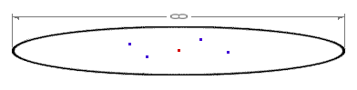
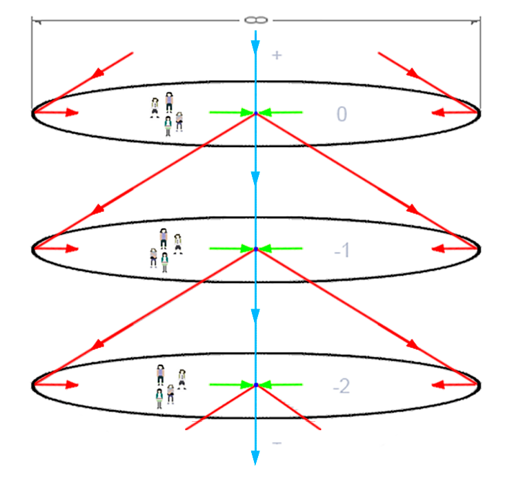
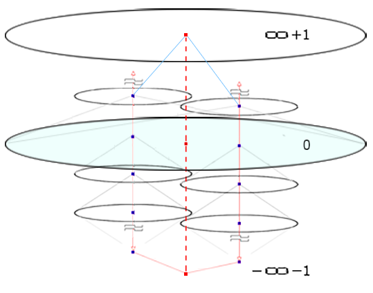
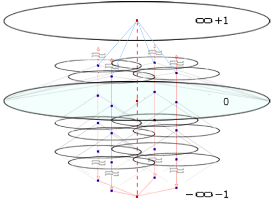
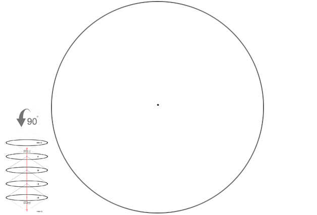
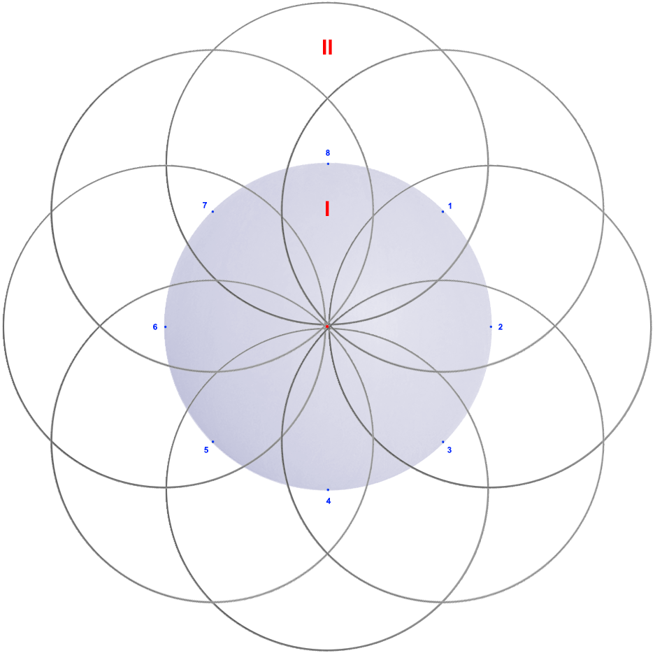
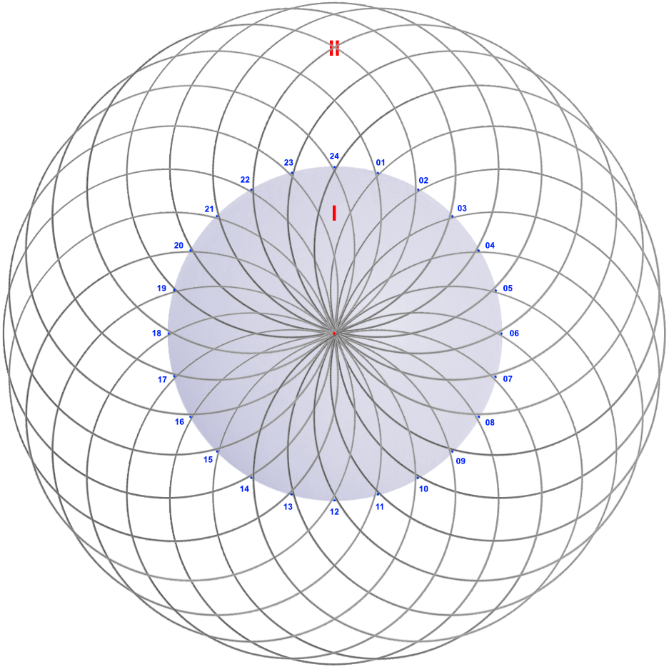

full contents of the book:
Nothing & Dot (Prolog)
Purpose
Contemplated
Entity
Consciousness
Two-Aspect (dualistic) Entity
Fourth dimension and ...
Society and Humanity
Fifth dimension and ...
Firstoccurence
Act of the “I”
The Proc.of study.the Act of "I"
The Meaning of Being
Development of Entity
The Collective Reality
the Entity Development System
Echo (Reflection)
Real Aspect of the Global I
About Worldview
Space-Time
Attitude toward Yourself
Attitude toward your body
Laziness
Fear
Hope (...for Miracle)
Adaptation
Identity of Personality
Relation [ Reason | Body ]
Free Will
Hard problem of Consciousness
Indistinguish and Identity
Matter
Gnoseology
Epistemology
Separation
to the home page
— Chapter Nine —
————————————————————————————
————————————————————————————
FIFTH DIMENSION, FIVE-DIMENSIONALITY
We, all together, being in one room, reason and explore – with the aim of answering the questions of interest: What is “I”? How is the World structured? and, What is the meaning of life? Each of us, from our own position, studies the structure of “I” (as well as the World as a whole). At the first stages, we analyzed the structure of the mechanism of contemplation, and much related to Consciousness, Reality, the Dualistic Entity;
* * *
Let's try to apply four-dimensionality in further research to prove the Synchronous Realization of the Single Reality by each of the participants in the situation. Until now, it has not been possible to prove the Presence of the people we contemplate. It is implied here that we only see them, and nothing more. We can assume that they see us, but precisely and as if "in they turn", but again it is clear that this is not a fact, or cannot be realized simultaneously, but this is also - unprovable in any way. In other words - the problem exists, it exists and relates to any visible objects, in the sense - do other people exist? or, is all this nothing more than an insignificant theater and an illusory fiction?
The position of "I", the red dot in the center of the space - will remain free for now. Now let's look around and assume that each of us is in his place, sees from his position everyone who is in this audience (see fig. 10). For each participant, both He Himself and we together are in the same situation, that is, we decided to explore the space with the current realization - assuming it to be synchronous, common, simultaneous, albeit taking into account different positions:

fig. 10
(common space and different positions)
Please note that we are considering the obvious and real space, and the situation for all participants, of whom there are four, and four points (excluding the central point).
It is known that the moment of reality has no extension, for each this moment is implied as its own. Then, we must admit that if each of the four "I" is a separate, independently acting Entity, then synchronization of Their moments of realization is absolutely impossible, this is also true due to the complete isolation of the reality of each participant;
We speak about the moment of the realization of reality by reasoning consistently, that is, we do not pay due attention to continuously flowing data (stream). It is necessary to eliminate this shortcoming by fixing the static condition of any reasoning - data are potential experience that does not come intermittently, but constantly flows into the "I", continuously flooding the inner space as if from the outside, from "Consciousness" through Reason. Studying the mechanism of contemplation, we implied this as a 'certain handler (processor)', imagining that we, together with the body and the current situation, through the eyes, or by means of data coming through other mechanisms of perception (touch, hearing, smell) - constantly immerse ourselves, as if flying into our "I" leaving the situation and that, the past space outside - while extracting experience and preserving a static wave of this situation in memory, with all the incoming data about the "objects" with the conditions of change and their general dynamics;
Pay attention to the figure 11. Level ‘0’ (upper). Red lines with arrows outside – incoming data filling the space from the outside. This data comes as a result of processing (which we know about). Objects – i.e. data, are interpreted and then qualified when we already contemplate the Situation, which, as a result of analysis, may turn out to be a new experience – green arrows into the “I” direction, experience and input data come inside, through the ‘usually called eyes’. The next level of reality (-1), after immersion into the “I”, the same thing happens inside – red lines are data coming from the outside, then –> a situation changed by means of a new experience, and again –> a new experience, green arrows inside.

fig. 11
(data streams)
And further, level (-2), and again the same thing. The process of flying inward together with your body, participants and situation, including the Universe, does not stop ... during life; An important feature to clarify is the data interruptions:
1). At the moment of eye blinking, and
2.) During sleep;
If we agree with the Solipsistic model of the World, the period of interruption during blinking of the eyes - must be recognized as an unknown in duration time interval. How about 5 million years between blinks? - after all, in theory, the size of this duration does not have much significance if it is completely unnoticeable; And on the contrary, with the Collective Synchronous Realization of reality - everything turns out to be as usual (habitual) ‘in its place’, due to the synchronization of the situation of several “I”, blinking will remain, as is customary, a short interval of ‘time’, but this is only the influence of the Collective relation to the concrette ‘interval of time’ - in fact this duration does not exist;
Next, let us allow ourselves to assume something that is unproven at this point, but seems logical and has very good grounds, which we still have to discuss;
During sleep, everything is strange. Realization clearly stops, seemingly voluntarily and intentionally, but in fact – because of the impossibility of contemplation and understanding, because of the conflict of dimensionality and the ability of Reason, that is, its parameters. Let's say, "I" participates "somewhere" in real events in the conditions of forty-dimensionality (40th dimension ) – we are not able, and not ready to see it and understand what is happening. When we see dreams, our activity in them always corresponds to the usual three-dimensionality. Other times, when we do not see them, it does not mean that there are no dreams, it is just that the dimension does not correspond to the possibilities, i.e. the level of development (development of our mind). By the way, if we accept this as a fact, then this is another confirmation that “Consciousness” and “Reason” are completely different “Things”. We believe that any living “Entity” (we are talking about my “I”, but from the position of each) lives a ‘potentially infinite’ number of lives of each specific personality simultaneously – therefore we are only sure that we sleep a third of our life. Here it should be taken into account that time, as such, does not exist in principle, i.e. the duration of processes is a sensory phenomenon, which is provided by ‘reading data of the wave nature’. Each point of the wave, in this case, corresponds to a certain condition-state of each specific object. The feeling of extension, in other, higher spatial dimensions, can have a completely different meaning, this is similar to how a conventionally infinite three-dimensional space can fit into one abstract point of a four-dimensional one. That is, in our opinion, day, night, sleep… – are systemic phases, signifying the beginning and the end of the existence of the “I” in ‘one of Its’ realities of a specific personality. Here, we believe in the “Own I”, however, we can prove only the “essence of Self-identification” and precisely a certain Path, as a unique experience, Reason and personal abilities (‘Mind’), allowing the “I” to recognize “Itself” as a separate “Oneself” (from the position of each), i.e. one of an infinite number of those (me, or you), whom “This I” can be, and Is, at any moment, including during sleep. But, if the “I”, during sleep, is active, acting in someone else’s, foreign body, then the ‘experience leading to death’ will absolutely certainly turn out to be a ‘final dead end’ – never claimed by anyone, and literally ‘forgotten forever’. Really? Is everything that harsh? From a materialistic position, everything is exactly like that. We already know that the World is arranged differently. Looking at the structure – the Scale, the Gigantism, the Infinity, and just this One Chance? - it's absolutely impossible. Should we be upset?, but we shouldn’t relax either.
There is a very interesting clue – we see “dreams”, this suggests that “I”, although it is an infinitely small part of the “Global aspect of the Entity”, but in reality – It is Personal, separate, independent, “Own I”, and during sleep (without dreaming) it leaves our Reason (disconnect), due to inconsistency with some specific conditions, or, perhaps, due to the multidimensionality of a parallel reality, or completely different, more complex conditions that are incomprehensible to us yet. It's good that sometimes we see dreams. This means that “I” have several parallel lines of experience at the same time – I cannot, referring to a humorous improvisation
That is, we assert that the "I" simultaneously acquires the experience of a potentially infinite number of (I) aspects of a specific personality. You will ask: -Why a specific personality? -Because in each dream, the "I recognize Myself", even in some strange situations that have never happened to me, but "I know that in a dream, I use the experience known to me, acquired by me personally, in this World, and not somewhere else”, but I use it where "I" has never been before. Or, we can assume that rational, valuable and necessary experience for the development of the Entity is extracted by all existing variants of a specific (mine or your) personality, but soon becomes available to all aspects of this personality, probably through different but similar situations where this experience is necessary and can be used (and becomes available).
If, this time, we assume that the “I”, during sleep of one aspect controls another personality (and ‘another body’), then periodically we would see dreams being “Not Myself”, but this has never happened, and we hope it will not happen. That is, with dreams everything is not as foggy as it seemed before. You may not agree with our reasoning, which is understandable. Everyone chooses the experience that they consider rational, but this one will also remain :) (if you are reading this);
Very often the assumption of the necessary Idea, in its ready-made expanded form, leads to the correct solution in the reverse order - from the ready result to the thoughts necessary for Its initial search by the classical method, but - they were previously inaccessible. That is - it is easier to find something precisely defined and necessary than something vague and incomprehensible. There is an opposite principle - 'a person has more of what he does not need', however, the analysis of the problem leads to a method for solving it;
By the way, regarding blinking – during the moment when the eyes are closed, the Entity can live an all entire other life (probably many times longer than 100 years) in a parallel branch of experience, in a space of a higher dimension, or in another
If a two-dimensional creature were to magically look “up”, it would be shocked by the giraffe, which on a plane is “four hoofprints”. But we should expect greater delight from understanding and realizing four-dimensionality;
The essence of the structure of four-dimensionality hardly exists independently, in that case the "I" would use it as a ready-made suitable structure. But, four-dimensionality, five-dimensionality, and further, Any dimensions are realized by necessity, for a Alive Entity, that is, by the Will of intention and in the presence of a foundation, which, in turn, arises according to the Law of Harmony, to maintain the widely known 'Balance of Opposites'. We are not able to imagine many "things". How many millennia do we need to realize thirty-dimensionality? It is important not to stop at what has been achieved, but to become infected with interest and, showing intention, to strive for something useful, following the Path that turned out to be the best One;
Let us recall and clarify about the multi-component, dynamic reality saturated with objects, which we call "Situation", often implying - as an empty useless event background, not carrying any experience. But, we already know that there are no events devoid of meaning. If we take this into account, then any situation is a potential experience and it does not matter whether we were able to extract it or not. That is, no interruptions that we use for better understanding occur, and the data, namely the current ones - transforming fill the space (from physics, and according to the Idea of flow
So: We have already agreed to study the synchronous realization of the Collective reality from the position of each participant, this is fundamentally very important -because we contemplate, live and create, realizing “Ourselves” as an important part of Humanity, Society, and Social conditions;
If the reality of each being is isolated, then we claim that separate "I"s cannot realize each other simultaneously and synchronously participate in events, given that reality is only an abstract boundary that has no extension, then - synchronization of the point of a specific state is impossible under these conditions. However, it is also impossible with the "current realization", that is, with the flow of data. We have already encountered such a problem before - this is the reason for the flawed presentation of the Structure of the World Structure, but not only in connection with the separate, isolated reality of each "I", but also because of the lack of a fifth spatial dimension for research and full-fledged reasoning. This statement is proved very simply and soon everything will become clear. We propose to clarify the conditions that are necessary for the realization of the "Collective Synchronous Realization of Reality" as a method in general. Next, we can choose one of two model options (if otherwise, then it is necessary to prove that they are the same):
1. "The world is I". When there is only "I" + "His Consciousness" + "His Experience", and nothing more. Everything else, anything, is an ephemeral illusion, i.e. content, secondary, including absolutely everything conceivable, and inconceivable; According to this attitude, the actual existence of other independent "I", as well as their experience, feelings and emotions, is absolutely impossible to prove (but if this is so, then there is no one to prove it for);
2. “The world is “I”, that is, one-for-all “Great Single I”, as the “Global aspect of the Entity”, the Whole – represented by a potentially infinite number of separate “Real aspects of the I”, each of which extracts its own, subjective and unique experience as an invaluable contribution to the common Good cause of “Development of the Entity”. And, the Good is here, precisely because of the relationship to the “Essence of the General”, that is, a contribution to the security of the “Guarantee of Eternal Being and Life”;
Let us pay attention – in the first case (1.) we encountered a stable and rigid Solipsistic model, however, this time, we will not attach special importance to this, since now we have the opportunity to look into the “Essence” much deeper than before, and we talking not only about the fourth dimension, but also about the Dualism of the Essence. Assuming such a model in the study, we previously agreed that there is only One four-dimensionality and One experience. At the same time, as it turned out later, the participants present in the situation were realized and acted as illusory phantoms – it was impossible to prove “Their Living State”, and we were forced to admit this (although we were morally unhappy with this and wanted it differently);
Now we know that we are not limited by three-dimensionality, but this does not yet cancel the Solipsistic model of the device. It is known that it is possible to study using known methods (but laws can be changed if there are grounds). If, using four-dimensionality - we are able to delve deeper into the "Nature of the Single 'I'", then it is logical that the 'five-dimensionality' will help to substantiate and prove more - the "Collective Synchronous Realization of Reality", as an Idea previously inaccessible, for known reason;
The regularity of the System of dimensions (p. 45) proves the correctness of the conclusion, since if five-dimensionality is an infinite number of four-dimensionalities, with their logical organization in a clear structure - with parallel axes, and four-dimensionality, at the same time, reflects the structure of one "Real aspect of the Entity", then the five-dimensional structure corresponds to an infinite number of Real aspects", and proves the "Collective Synchronous Realization of Reality". This is far from all that will follow as a conclusion. We will examine this structure in detail;
That is, the second option is more rational, it is more flexible and especially loyal, but it has an unusual design feature – the General “Single Great 'I' ”. We need to discuss this design for verification purposes, because the “Entity” is Perfect, has no fundamental errors in Its Structure, otherwise the World would not exist (judging by its real complexity). On the other hand, we understand that – ‘the “Entity” has no limitations’.
We have found out that the "I" (following the logic of these models) is the Cause of Everything, in the full sense. If this is so, then we have "One Aspect", and namely the "Global aspect of the Entity". In this case, the internal "Consciousness" is implied, where the "I", as is known and felt in practice (look around) - always realizes Itself in the center, as the "Real aspect of the I", which, in the Solipsistic model of the World, states that: "There is only I". Therefore, the "Single Great 'I' ", both "one-for-all" (2), and the Solipsistic model (1) - are the same thing, and absolutely nothing depends on any paradoxes in popular philosophy, especially on contradictions, as in the previous examples. That is, we assert that human recognition of the structure of the World by the "Solipsistic model" - will not change the True structure of the structure of the World, or the "Entity";
That is, the “Single Self, which turned out to be Global”, which is precisely what is asserted when it is said “There is only I, and nothing more” – requires the necessary relativity to “Consciousness”, in the Global sense, and in addition, under the condition of reality in “Space”, which arises naturally due to the Presence of the “Entity”, a 'Balance of Harmony' is needed: “The Real Aspect of the Global 'I'” (or, everything loses its logical meaning) – which will entail the definition of an infinite number of “Not I”, or, denial would mean a contradiction to One’s Own Being, but this is already absurd;
It remains to confirm: Following the chosen method, we first defined the final result as the structure we wanted to arrive at, and the tool – Five-dimensionality, as the basis of this structure, and, as a result, we received the necessary solution. We suggest trying to depict five-dimensionality, we hope we will succeed. Visualization, in our case, is a geometric model, i.e. a visual diagram, which is very important for understanding, and as a principle for constructing dimensions, and is very necessary in the perspective of reorganization and development of Reason
[ “Development (a priori)” = Life ];
* * *
I propose to allow us a few more premature postulates (this is not bad), since we will soon discuss this topic in some detail. To tell the truth, it is difficult to imagine anything without this, but we ask that you treat this, if possible, with due attention.
The “Single Great 'I' ” is equivalent to the “Global aspect of the 'I' ” and the “Global aspect of the Entity”, by analogy: “The Real aspect of 'I' ” = “The Real aspect of the Entity” – this is the “Spark of Life”, the “Vivifying 'I' ”, that is, the “Reading Personality” contained in the static wave of experience of every living being ( – in the conditions of Reality);;
So, let's imagine the Five-Dimensionality: Look at the figure 12. The "Global aspect of the Entity" is the red dot at the bottom of the diagram "at" the transcendental level -∞-1, represented by a potentially infinite number of "Real aspects of the 'I'" but through individual lines of experience. Simplifying this example, we have depicted only two Unicus, and the common "Consciousness" - here it is the transcendental level ∞+1. Each of the "Real aspects of the Entity" has its own four-dimensionality ("Unicus"), i.e. it uses and extracts its own subjective and unique experience. The broken red line is the Relativity of the "Global aspect of the Essence" to "Consciousness" - this is also the wave of experience, the moment of synchronization of common reality:

fig. 12 (very abstract, but figurative sphere)
With such a Concept of the World, a synchronous realization of reality is carried out by any number of living participants in the situation. It is difficult, but you will figure it out. First, imagine the construction of five-dimensionality ("Generalis"). Compare these 'situations': with two participants in fig. 12, and four in fig. 13. Keep in mind the potentially infinite number of axes (Unicus) in the structure of five-dimensionality. Of course, you understand the impossibility of depicting the picture as a whole.
Five-dimensionality (‘Generalis’) – potentially contain an infinite number of parallel oriented four-dimensionalities (‘Unicus’).
"The Entity" initiates and uses such a structure, creating the appropriate and necessary conditions for development. From this moment on, you have the opportunity to assume and build structures of higher-order dimensions. Before, you were not able try to imagine them (the sixth, seventh, eighth... dimensions). With experience in building four- and five-dimensionality, such a task will no longer frighten anyone and the solution will be possible. Level "0", at which the "Collective synchronous realization of reality" is carried out (fig. 12), requires special attention and study from us, so we will discuss it further, in the process of a detailed analysis of five-dimensionality (the fifth dimension), and the extremely abstract geometry of this structure;
The diagram in fig. 12 (with the corresponding comments) allows us to have an idea of the five-dimensionality, and to realize it through the reason why it has exactly this structure. We do not consider this trivial and accessible to everyone (as well as the four-dimensionality), although we are sure that there are those who want to know and carry out a complete (total) reorganization of the Reason - who will find in themselves the strength and ability to understand. But there are other ways of applying these studies. We will leave the readers the opportunity to improvise, so as not to lead them astray from “Their Path” with empty speculations , because any ‘foreign Idea’ can be highly contagious, it disrupts the (-u|-za)stagnant orders that have existed for millennia - taking their place, due to the vitality of another order;
Dimensions are connected with the ability of the mind to realize the realization of reality as a basis for space with the corresponding abstract structure. Any dimension, if there is the necessary level of such ability, is realized in space as a System for the location of the basis itself. If the Reason does not have the necessary properties for the realization of the required space, then the Essence of such a level is transcendental;
five-dimensionality is a figurative sphere

fig. 13 (four Unicus here, for understanding compare with fig. 12)
There are not many pieces of advice, but one is extremely important – keep in mind that five-dimensionality potentially consists of an infinite number of four-dimensionalities, however, first you need to understand and fully comprehend four-dimensionality. Do not rush, look at fig. 8, read this research, try to understand, or – we do not recommend delving into this topic in order to maintain ‘Sanity’. In any case, if you take a step into the Abyss, it happens of your own free will and initiative, i.e. absolutely voluntarily. If you do not intend to retreat, try to relax and distract yourself, then try again, but do not overdo it. We have warned you that this is dangerous. We can only sincerely wish you good luck in comprehending -four and -five-dimensional space (rest more often);
The realization of reality with such a structure (see fig. 11 carefully) is carried out by means of the transformation of the combined, i.e. objective experience and combined objective conditions at level “0”. It should be noted that the new experience extracted by each “Real aspect of the Self”, above level “0” (past), will be separate, unique and subjective, as well as the one coming for the combination, i.e. from level “0” and below, is also unique and subjective. We know that the acquired ‘new experience’ becomes the raw material for the next realization. It is necessary to take into account the cyclicality and the so-called “fluidity”, which we talked about earlier – this is extremely important for understanding. It is important to understand that level “0” is only designated as general, however, for each “Self” it is isolated. Level “0” must be understood as “pseudo general” both for the reason and for the complete synchronization of the Situation, at all levels “0” of each participant. This makes the Situation identical in each of them, and participation immediate, direct and factual. Synchronization of reality, as we see, of absolute quality - exactly corresponds to the definition of "Collective Synchronous Realization of Reality", which is ensured by the "Unified Consciousness". In this regard, it must be said that time is not required to access the "System". It is everywhere, or rather - It Is Everything. That is, multidimensionality and the dimensions of the World, which we realize in the conditions of reality due to our nature - make sense only for us, and other "creatures using three-dimensional space". For the "Global aspect of the Essence", and for "Consciousness", there are no obstacles - time and distance do not make sense. If this makes it clearer, we would apply the definition of the property "Omnipresent", but this is not entirely correct, because "Consciousness" does not have its own Will
The First Data Source is the initiator, he is also the first witness of a new situation. This definition is not entirely correct, because one (any) situation is a continuation of another, this is confirmed technically, due to the ‘flow of data, experience and conditions, in the process of implementing reality’, see page 61 (fig. 11).
Synchronization data is instantly distributed between all participants of the situation, i.e. information is available everywhere and to all participants simultaneously. There is no process and sequence in the data circulation and it does not require time. Time extension is realized and felt by beings capable of extracting experience. For development, through analysis and extraction of experience, a process is always necessary. The initiator of the situation, and therefore ‘he is also the activator of data distribution’ – is the reason for data synchronization for all participants. “Consciousness” carries out the realization of the situation in the space of each participant, and also ensures all operations with data. The situation, for each participant, occurs in conditions of complete isolation, in his own, i.e. individual space, but is completely synchronized with all beings who are capable of contemplating it and taking part in it, including all living things (people, horses, birds, flies …);
Let's consider a very interesting detail. This is connected with the "Collective synchronous reality" - averaging of experience, i.e. combination. We know that the state of each object changes constantly, transforming into its new state. Cyclicity is realized through the common "Consciousness" preserving the technically objective "picture" - the conditions and dynamics of changes, but not the experience. The point of attention of each "Real aspect of the 'I' " reads the wave of change of the object. Each aspect reads it with its own conditions, and taking into account the individual position of a specific "Self" in space. To ensure complete synchronization, "Consciousness" must have something in between, that is, averaged, let's call it "objective experience". The combination is dynamic and has turning points, let's give the simplest situation as an example:
A group of tourists are traveling in the jungle. They have an experienced guide, however, three tourists break away from the group and become accidental witnesses of a fight between a mongoose and a king cobra. It seems that the small but brave animal has little chance of defeating the deadly poisonous snake. The combined experience of the Europeans (still unaware of the mongoose's special skills) prevents him from winning in such a situation, when suddenly their experienced guide comes out from behind the bushes. He knows that the cobra has practically no chance against the small mongoose.
The combined experience immediately changes in favor of the animal, and gives him the opportunity to win quickly. There are some subtleties in the process of combining (as merging), but in general the system works in this way, taking into account the chances that the cobra also had, but they were less than of the fast, cunning mongoose (guide factor). Conclusion:
When combining experience, the predominance is in favor of the more compelling reasons. The variations in conditions are preserved, but the negative effect of this factor is not reflected in the effects of the prevailing influence;
It is necessary to consider not only the probability* with which the mongoose could suffer defeat, due to the chances of a miss, or an unsuccessful dodge from the bite of the cobra. Its loss also had increased chances, compared to the usual situation, due to the biased attitude of tourists - they assumed the victory of the cobra and feared for the life of the mongoose - creating a negative background that hinders the success of the animal. Be careful with any emotions - no chances (or probabilities) matter in the slightest. *Only knowledge and experience are decisive;;
* * *
Turning method – this will come in handy :) for presenting 4D and 5D projections – if you look from the end, from above.

fig. 14
(sphere - structure Unicus - diagram view from above)
If we look at the four-dimensional diagram from above, we will see a circle with a point in the center. The radius of the circle is infinite, so this is an abstract representation. But, understanding the structure, we know ‘this is a figurative ball’;
It becomes obvious that “Dimensionality of any degree fits into the structure of an abstract infinite sphere””, i.e. infinite space, realized for the specific needs of the “I”, but we have different abilities – some people find it difficult to imagine higher dimensions (its possible to learn). This means the existence of beings who see what is inaccessible to others. So: The dimensionality of space is a method of realizing reality that corresponds to the parameters of Reason;
To imagine the Five-Dimensionality in the form of a ball:
In four-dimensionality only the one central point tends, or goes inside Itself, then in five-dimensionality, each point is the axis of a separate Unicus, and also goes inside Itself. However, this is not all that is needed to know to imagine four- / five-dimensionality. Once again, pay attention to the method of turning the structure of four-dimensionality (fig. 14);
If we can imagine four-dimensionality in the form of an abstract sphere - the radius of which is infinite, then five-dimensionality is also a sphere, but has a layout that is an order of magnitude more complex. Look at Figure 15 - this is a diagram of five-dimensionality (according to Figures 12, 13), but with the structure rotated in the direction "towards itself" by 90 degrees - or, this is a view from the end, from above. If you figured out how to rotate four-dimensionality, then with five-dimensionality it will not be more difficult;
Here it is quite clear that if we assume a certain edge of infinity, and from the position of “Consciousness” this does not look absurd (even if abstractly), since “Consciousness” is beyond and ‘technically outside’, then – five-dimensionality has, as it were, different densities, that is, internal (I) and peripheral (II), within the ‘limits of the latter’ infinity has a secondary status, and the internal one, including all the axes of the built-in Unicus, has a higher density. Doesn’t this remind you of the uneven density of the Universe?
Peripheral infinity (II) does not include the Unicus axes – they intersect only dense space (I). Next, let us consider the ‘structure of five-dimensionality’. To simplify the task of representation, we propose to consider uniformly spaced Unicus axes (1-8) – this makes sense, since it is absolutely impossible to prove solitary existence;

fig. 15
(ball - Generalis - diagram view from above - here 8 Unicus)
Pay attention to the diagram with four Unicus (fig. 13), imagine it well and turn it so that you can look at the whole structure from above. In fig. 15, by analogy, there are 8 Unicus, with their centers along the dense edge. For example, in fig. 16 there are 24 Unicus. In fact, in five-dimensionality there is an infinite number of Unicus, and the axes are located not only along the edge (this is shown only for a better representation of the different densities of the Universe), but also penetrate the entire dense region of space. This element of the diagram is a figurative likeness of a dense bundle of axes, composed into one axis - an ‘endless pipe into inside’;

fig. 16
(ball - Generalis - diagram view from above - here 24 Unicus)
This is probably why the Universe is less populated by living beings on the periphery than in the Center (or, taking into account the complete absence of axes, life on the periphery of the Universe is impossible, however, on the border of habitability it is almost safe due to the maximum distance from the densely populated center. ... This is probably why no one flies to us? :) It is also interesting that in telescopes we see not an infinite number of Galaxies. This means that Galaxies are realized through a wave function, like everything that exists in an infinite number (this is exactly so), that is, we can assume that the Black Holes of All Galaxies are the "Axis of Being", that is, they have some important relation to the "Global aspect of the Entity"
Representing five-dimensionality is not an easy task, it is an order of magnitude more difficult than four-dimensionality. When considering a ‘flat diagram’, do not forget about the representation of a figurative sphere (even if it is infinite). It is quite possible that it is worth revising the concept of ‘dimension’, replacing it with the concept of ‘complexity’, or, for example, ‘the degree of complexity of space’, if space is meant, and ‘the complexity of reality’ (or ‘realization’) – in the corresponding reasoning, in cases where the spatial structure is being discussed;
This is unusual, but it would be more accurate to say – ‘the fifth degree of complexity of space’, rather than ‘the fifth dimension’, since it is still difficult to understand – how exactly to carry out the measurement? and what exactly can be measured in these conditions, but there is a sense in understanding the degree of complexity (nesting);
read next chapter >> << back